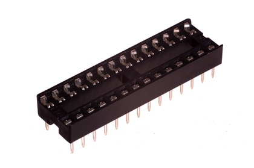
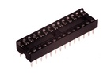
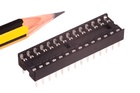
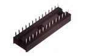

28 Pin DIP IC Socket - IS28

Summary
Name: 28 Pin DIP IC Socket
ID: ICSO-DI28-X-STAN-01
Hex ID: IS28
WebPage: https://github.com/oomlout/oomlout-OOMP/wiki/ICSO-DI28-X-STAN-01
Short URL: http://oom.lt/IS28
Revision History: https://github.com/oomlout/oomlout-OOMP/blob/master/parts/ICSO-DI28-X-STAN-01/
| Type |
Size |
Color |
Description |
Index |
ICSO
IC Socket |
DI28
28 Pin DIP |
X
|
STAN
|
01
|
Images



About
This part is awaiting a description.
Specifications
| Info |
Value |
| Type |
IC Socket |
| Size |
28 Pin DIP |
| Pitch |
2.54 mm |
| Width |
10.16 mm |
| Height |
5.2 mm |
| Length |
35.56 mm |
| Number of Pins |
28 |
| Maximum Current |
1 A |
| Maximum Voltage |
250 V |
Extra Details
Spotted a mistake, want to add more? Let us know oomp@oomlout.com
All images and resources are licensed [CC BY-SA] unless otherwise stated (ie. the datasheets)